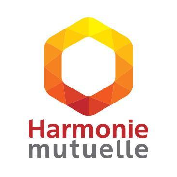

Directeur de l'innovation en informatique
Le Directeur de l'innovation en informatique ( ou système d’information ) est chargé de diriger une équipe dont le rôle est d'élaborer des innovations au niveau des systèmes d'information d'une entreprise. Il est à la fois capable d’élaborer des solutions techniques pour son service et de manager une équipe.
Interview d'un DII chez Harmonie Mutuelle: Thierry Gatinneau

Missions
Le DII doit être capable d’avoir une vue d’ensemble de l’informatique de l’entreprise afin d’optimiser celle ci pour améliorer son fonctionnement global . Il est à la tête d’une équipe d’informaticien chargé de faire évoluer et entretenir le parc informatique d’une entreprise.
Le DII met en place les expérimentation, gère les budgets et envisage toutes les évolutions de l’informatique de l’entreprise.
Se tenir informer de toutes les innovations à l'extérieur de l'entreprise est une part importante du métier. Le DII fait une veille active des actualités informatiques liées aux innovations qu'il expérimente.
Compétences requises
- Curieux: Un DII se doit de se passionner pour toute innovation techniques et humaines
- Polyvalent dans les diverses branches de l’informatique
- A l'écoute de ses collaborateur: la bonne idée innovante peut venir de n'importe lequel d'entre eux
- Autonome
- Organisé
- Rigoureux
- Capable d’envisager l’avenir et d’anticiper les problèmes futurs et les améliorations possibles.
Formation
Ce métier à de particulier qu’on arrive pas directement directeur de l’innovation après une fin d’étude. Il est réservé aux professionnels expérimentés ayant un Bac + 5 au minimum que ce soit un diplôme d’ingénieur ou un master en informatique . L’origine du professionnel à partir de là peut-être assez diverse, l'expérience technique et managerial est fondamentale .
Salaire
Le métier étant tout nouveau les salaires sont assez libres. Pour se donner une idée le DII que nous avons interrogé était payé entre 3500 € et 4000€ net par mois.